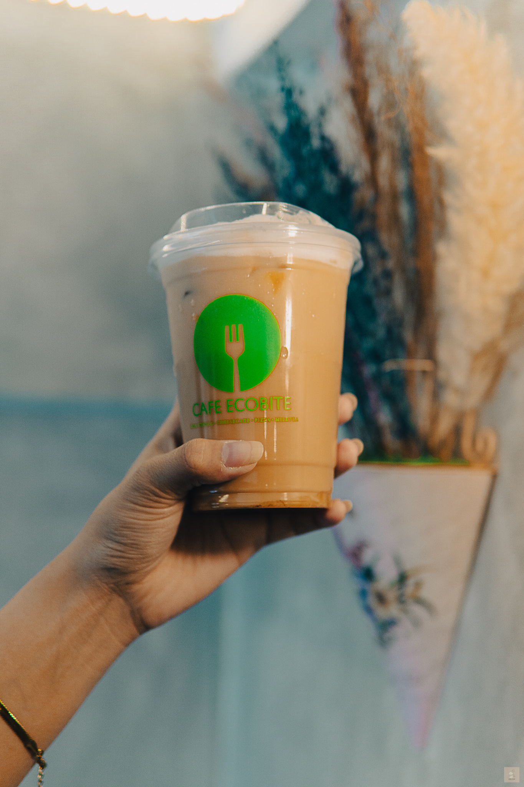
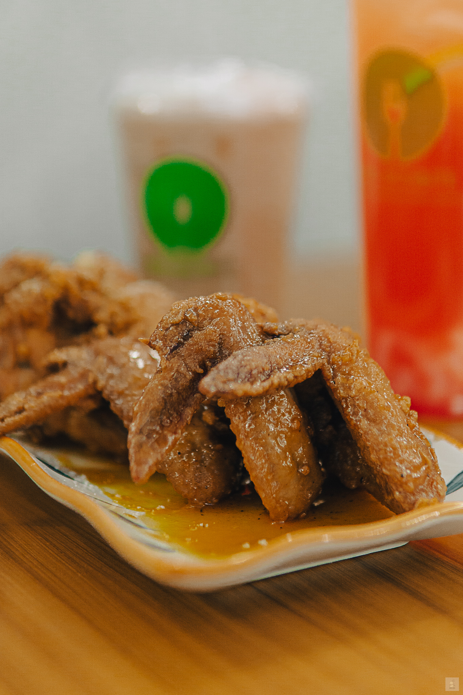
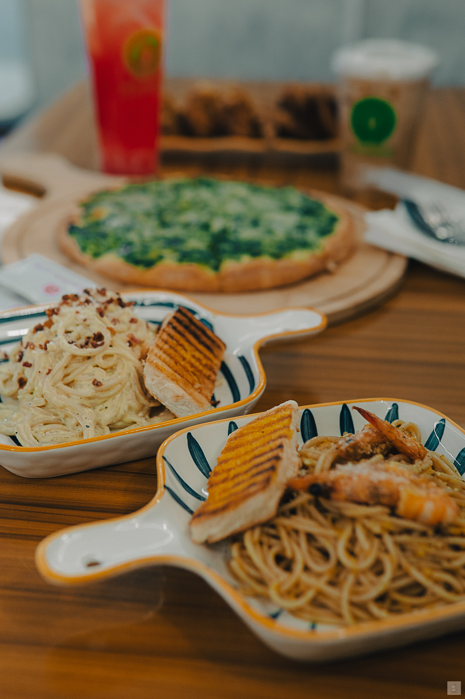

At Café Ecobite, savor ethically sourced pasta dishes and succulent wings, complemented by an array of eco-conscious beverages and expertly brewed coffee, all served with a commitment to sustainability and flavor.

Our Coffee
Savoring a cup of our meticulously brewed coffee is akin to experiencing a symphony of flavors dancing gracefully on your palate, a harmonious blend of rich aroma, velvety texture, and soul-warming essence.

Chicken Wings
Delving into a basket of our crispy, succulent chicken wings, each bite bursting with flavor and coated in a tantalizing sauce, is an experience that ignites the senses and sparks pure culinary bliss

Pasta & Pizza
Indulging in a plate of our pasta draped in luscious sauce or savoring a slice of piping hot pizza adorned with a melange of savory toppings is like taking a culinary journey to Italy, where every bite whispers tales of tradition, craftsmanship, and unbridled gastronomic pleasure.
What Our Customers Says
Customers rave about the cafe's cozy ambiance, friendly staff, and delectable menu offerings. From the rich aroma of freshly brewed coffee to the heavenly taste of their signature pastries, each visit promises a delightful culinary adventure that keeps patrons coming back for more. With glowing reviews praising both the quality of food and the welcoming atmosphere, this cafe stands as a beloved gem in the hearts of its satisfied customers.

I stumbled upon Cafe Ecobite while exploring the city, and I'm so glad I did. From the moment I stepped inside, I was greeted by a cozy atmosphere and friendly staff. The menu, filled with wholesome, locally-sourced ingredients, instantly caught my eye. I opted for their carbonara and a vanilla latte, and I was blown away by the freshness and flavor of every bite!
Brendon Matias

Cafe Ecobite is a delightful find for eco-conscious foodies like myself. Their menu features fresh, locally-sourced dishes that are as delicious as they are sustainable. From the moment you step inside, you're greeted by a warm atmosphere and friendly staff. Don't miss their matcha latte and cheesy spinach pizza – they're absolute must-tries!
Christie De Guzman